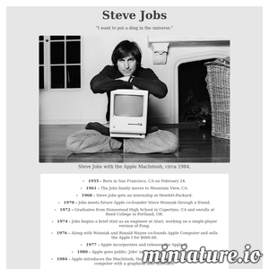
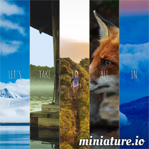
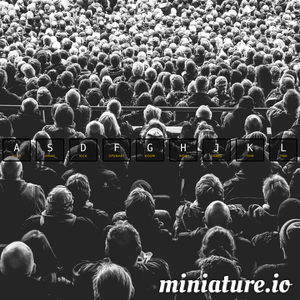
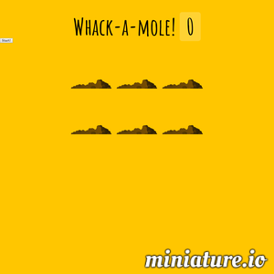
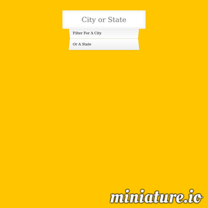
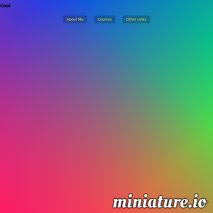

A tribute page for Steve Jobs made with HTML and CSS.

A gallery of responsive CSS Flex Image Panels, from Wes Bos's JavaScript30 course.
A simple HTML5 canvas that you can draw on, from Wes Bos's JavaScript30 course. Just click and drag!

An interactive JavaScript Drum Kit, from Wes Bos's JavaScript30 course.

Whack-A-Mole game, from Wes Bos's JavaScript30 course.

A search box with predictive text that shows city population numbers, from Wes Bos's JavaScript30 course.

Navbar drop-downs that respond to the 'mouseenter' and 'mouseleave' event listeners, from Wes Bos's JavaScript30 course.